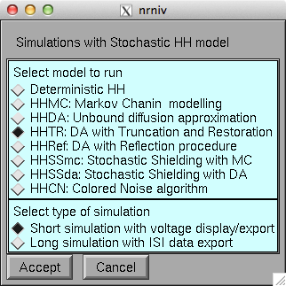
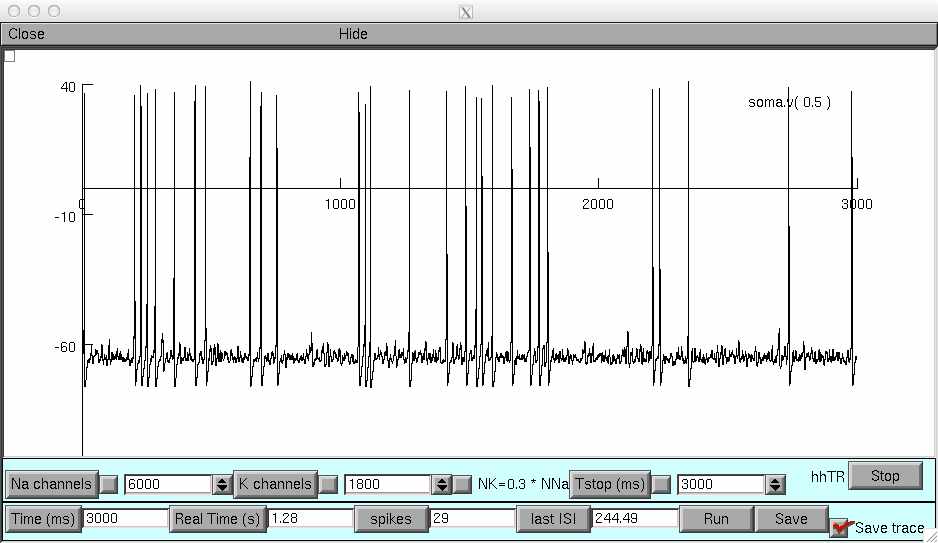

Model files that accompany the publication: Pezo, Soudry, Orio (2014) Front Comp Neurosci 8:139. DIFFUSION APPROXIMATION-BASED SIMULATION OF STOCHASTIC ION CHANNELS: WHICH METHOD TO USE? DOI: 10.3389/fncom.2014.00139 Sample codes for stochastic simulation of ion channels in NEURON HH folder: ---------- Original H&H model. Single compartment simulation, with the option of a short simulation with voltage trace or a long simulation with inter-spike intervals recording. SchmidtHieber folder: --------------------- Simplified hippocampal neuron with fast kinetic in sodium channels (Schmidt-Hieber and Bischofberger (2010) J. Neurosci 30:10233.) For this publication, inactivation of potassium channels was removed In each case, several stochastic simulation algorithms are provided: MC: Markov chain modeling, using Gillespie's algorithm Gillespie (1977) Exact stochastic simulation of coupled chemical reactions. J. Phys. Chem.81:2340 DA: (unbound) diffusion approximation Orio and Soudry (2012) Simple, Fast and Accurate Implementation of the Diffusion Approximation Algorithm for Stochastic Ion Channels with Multiple States. PLOS ONE 7(5):e36670 SSmc: Stochastic Shielding approximation with Markov Chains for stochastic transitions Schmandt and Galan (2012) Stochastic-Shielding Approximation of Markov Chains and its Application to Efficiently Simulate Random Ion-Channel Gating. Phys Rev Lett 109:118101 SSda: Stochastic Shielding approximation with Diffusion approximation in stochsatic terms Combination of DA and SSmc, published here for the first time. Ref: Diffusion Approximation with a reflection procedure to control boundary and normalization constraints Dangerfield et al. (2012) Modeling ion channel dynamics through reflected stochastic differential equations. Physical Review E 85(5):051907. TR: Diffusion Approximation with a Truncation/Restoration procedure to control boundary and normalization constraints. Huang et al. (2013) Phys Rev E 87:012716 CN: Uncoupled gating particles with Colored Noise (Only applied to H&H) Guler (2013) Stochastic Hodgkin-Huxley Equations with Colored Noise Terms in the Conductances Neural Comp 25:46-74 Demo run: Autolaunch from ModelDB (after NEURON is installed and the browser configured) or download this archive, expand it, and compile the mod files in the HH folder (mknrndll on mswin or mac, nrnivmodl on unix/linux), finally start by running mosinit.hoc (double click in windows explorer, drag and drop onto nrngu on the mac, or type "nrngui mosinit.hoc" on the command line in unix/linux). Once the simulation is running click accept on the first window:  and run on the second to obtain a demo run like the below: 